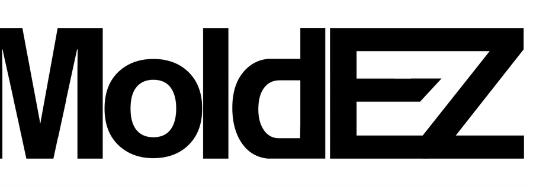

AI Detection
Roboflow-hosted models locate petri dishes and culture regions from imported images or a live webcam capture.

A desktop application for petri dish research. Detect plates, measure mold coverage, compare sessions over time, and export publication-ready PDF reports, all on your machine.
01 Features
Four modules that together take a raw plate image to a shareable, versioned analysis.
Roboflow-hosted models locate petri dishes and culture regions from imported images or a live webcam capture.
Plate diameter, culture area, coverage percentage, and pixel-space metrics, all computed automatically.
Save each analysis, then load and compare across time points to track colony growth in a structured way.
Export publication-ready PDFs with visual overlays, per-session metrics, trend charts, and metadata.
02 How it works
Each step is a screen in the app. No terminals, no scripts.
Load an image from disk, or capture directly from a connected webcam mounted over the plate.
The AI model returns bounding boxes for the plate and mold regions. Overlays render on the source image.
Coverage, area, and diameter are computed. Save the analysis as a session with your notes and timestamp.
Load prior sessions to see growth trends, then export a PDF report with overlays and charts.
03 Under the hood
All third-party libraries used are open-source and appropriate for academic research.
04 Get MoldEZ
No build steps. Download, run, launch. First-run AI model init needs an internet connection.
Windows 10 · Windows 11
Apple Silicon · Intel
Read the code, file issues, contribute
05 FAQ
The AI model is initialized over the network on first run. The application runs on your desktop; results, sessions, and reports stay on your machine.
No. The Windows installer bundles everything needed. Python source is only relevant if you want to run or modify the code yourself.
Common still-image formats (JPG, PNG) captured either from disk or from a connected webcam. HEIC and HEIF are also supported via pillow-heif.
The macOS build is available now, a disk image (.dmg) on the Releases page. Grab it from the Download section above.
MoldEZ was developed under the TruScholars Summer Undergraduate Research Program at Truman State University. See the credits section below for the full contributor list.
Open an issue on the GitHub repository.
06 Credits
Developed under the TruScholars Summer Undergraduate Research Program, Office of Student Research, Truman State University.
Computer vision and segmentation asset development, in descending order of contribution.
Install in under a minute. No account, no configuration.